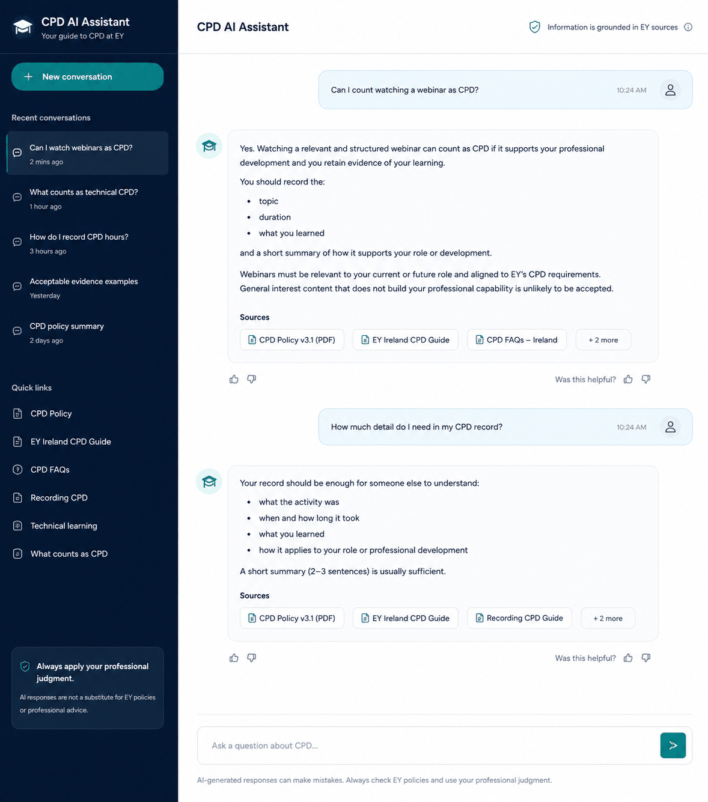

Case study
Enterprise CPD AI Assistant
RAG knowledge assistant for enterprise CPD guidance
I designed and built an enterprise AI assistant that helps regulated professionals navigate complex CPD requirements through natural-language questions — making fragmented policy and Learning & Development guidance easier to understand and act on.

Problem
The challenge was not a lack of CPD guidance — it was the volume and complexity of it.
Employees had access to lengthy policies, guidance and Learning & Development documentation covering what constituted CPD, what qualified as technical learning, what evidence needed to be retained and how hours should be recorded. In practice, people still struggled with straightforward questions: does an online course count? Can I count a webinar or lecture? What makes an activity “technical”? What evidence do I need? How should I describe the activity when recording it?
The result was avoidable friction. Employees sometimes did not record eligible CPD activity at all, or submitted records that were rejected because the information or evidence was insufficient. For professionals subject to CPD requirements, difficulty interpreting the guidance could ultimately contribute to non-compliance.
The product question: can an AI assistant turn complex, fragmented CPD guidance into clear, actionable answers without requiring employees to search and interpret lengthy source documents themselves?
Product
I built a conversational AI assistant that lets employees ask CPD questions in natural language and get answers grounded in the organisation's existing CPD knowledge.
The knowledge base brought together relevant source material:
- CPD policies
- guidance documents
- Learning & Development material
- relevant FAQs and supporting documentation
Rather than expecting employees to find the right document, locate the relevant section and interpret it themselves, the assistant provided a conversational route into that knowledge. Typical questions:
- Does this activity count towards CPD?
- What qualifies as technical CPD?
- Can an online course or webinar count?
- What evidence should I retain?
- How should I record the activity?
- Why might a CPD submission be rejected?
The interface was a modern chat experience designed around employees asking practical questions rather than navigating policy documentation.
How it works
Employee question → relevant enterprise CPD knowledge retrieved → LLM generates a contextual answer → deterministic handling applied for defined high-frequency question patterns where required → employee receives a clear answer to act on.
The solution used a RAG approach in Python, grounding responses in a curated knowledge base built from existing CPD policies, PDFs and Learning & Development material.
A key design decision emerged through testing: generative responses were not consistently reliable for every question. For recurring, well-understood patterns where the response needed to be predictable, I added rule-based handling triggered by defined terms or keywords — a pragmatic hybrid that uses retrieval and an LLM where contextual interpretation adds value, and deterministic responses where consistency matters more.
Building within enterprise constraints
The assistant was built within real enterprise constraints — limited budget and technology options — for an enterprise use case with a broader potential internal audience of around 2,000 employees. That shaped the architecture: rather than assuming every question could be solved reliably through generative AI alone, the solution combined RAG-based answers with deterministic handling for known scenarios where testing showed greater control was needed.
The goal was not to maximise the amount of AI in the solution — it was to build the most useful and reliable solution possible within the available constraints.
Evaluation & iteration
I created a test set of around 100 representative questions, based on the kinds of CPD queries employees were likely to ask.
The assistant was evaluated through:
- structured testing against the representative question set
- manual review of generated answers
- user testing with around 200 people across Consulting (EY Ireland and the UK)
- Subject Matter Expert (SME) review
- iterative refinement based on incorrect, unclear or unreliable responses
Early testing exposed an important limitation: some generated answers were incorrect or inconsistent even when the underlying guidance existed. Rather than accept those responses, I identified recurring question patterns and introduced deterministic answers where the correct response was known and consistency mattered, then retested as the solution evolved.
Because CPD is a compliance-related domain, plausible-sounding answers were not enough — an answer needed to reflect the underlying guidance accurately enough to be useful. Evaluation combined technical testing with domain validation from SMEs and end users.
Outcome
Testing and early use showed that the assistant could make CPD guidance significantly easier to navigate, giving employees a faster route to understanding what counted, what evidence was required and how activity should be recorded. Feedback was positive, and the solution demonstrated potential to reduce time spent searching through guidance, improve confidence in CPD recording, and reduce avoidable submission errors.
The project also generated leadership interest and progressed beyond the initial build towards broader productionisation.
What I built
- End-to-end AI assistant — designed and built the solution from problem definition through working application.
- Knowledge base — brought together relevant CPD policies, PDFs and Learning & Development guidance for retrieval.
- RAG workflow — implemented retrieval and LLM-based question answering in Python.
- Hybrid response design — introduced deterministic handling for recurring question patterns where generative responses were not reliable enough.
- Chat experience — built a conversational interface for employees to ask practical CPD questions in natural language.
- Evaluation — created and tested around 100 representative questions, with manual review, user testing and SME validation.
- Iteration — used observed failure modes and feedback to refine the solution rather than relying on plausible-looking model output.
Tech: Python · RAG · LLMs
Current status
The assistant has progressed from working build through user and SME testing, with positive feedback and leadership interest. Work is now focused on productionising the solution for broader internal use.